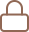

<div class="sara-ekkohl">
  <div class="button1"></div>
  <div class="button2"></div>
</div>
<div class="sara-ekkohl">
  <div class="button-container">
    <div class="shadow upAnimation delay-0"></div>
    <!-- <div class="shadow upAnimation delay-1"></div>
    <div class="shadow upAnimation delay-2"></div>
    <div class="shadow upAnimation delay-3"></div> -->
    <div class="button3"></div>
    <div class="icon-wrapper">
      
    </div>
  </div>
  <div class="button4"></div>
</div>

<!-- <div class="dashboard-container">
  <h1>Kanji Radicals Practice</h1>
  <p>
    Kanji are classified in kanji dictionaries according to their main
    components which are called radicals (roots) in English and 部首 (ぶしゅ) in
    Japanese. 部 (ぶ) means a group and 首 (しゅ) means a chief (head/neck).
    There are 214 historical radicals derived from the 18th century Kangxi
    dictionary. Every kanji without exception only has one radical / 部首
    (ぶしゅ). Each radical has a meaning(s) and lends its meaning(s) to the
    kanji of which it is part.
  </p>
  <h2>Settings</h2>
  <p>Configure the difficulty and type of practice that you want.</p>
  <div class="settings-container">
    <div>
      <b># of radicals</b><br />
      <mat-button-toggle-group #signs="matButtonToggleGroup" value="All">
        <mat-button-toggle value="20">20</mat-button-toggle>
        <mat-button-toggle value="40">40</mat-button-toggle>
        <mat-button-toggle value="80">80</mat-button-toggle>
        <mat-button-toggle value="160">160</mat-button-toggle>
        <mat-button-toggle value="All"
          >All</mat-button-toggle
        > </mat-button-toggle-group
      ><br />
    </div>
    <div>
      <b># of options</b><br />
      <mat-button-toggle-group #options="matButtonToggleGroup" value="4">
        <mat-button-toggle value="2">2</mat-button-toggle>
        <mat-button-toggle value="4">4</mat-button-toggle>
        <mat-button-toggle value="8">8</mat-button-toggle>
        <mat-button-toggle value="10"
          >10</mat-button-toggle
        > </mat-button-toggle-group
      ><br />
    </div>
    <div>
      <b>Hiragana sign hints</b><br />
      <mat-slide-toggle [(ngModel)]="settings.hiraganaHint">{{
        settings.hiraganaHint ? "On" : "Off"
      }}</mat-slide-toggle
      ><br />
    </div>
    <div>
      <b>Romanji sign hints</b><br />
      <mat-slide-toggle [(ngModel)]="settings.romanjiHint">{{
        settings.romanjiHint ? "On" : "Off"
      }}</mat-slide-toggle
      ><br />
    </div>
    <div>
      <b>Test</b><br />
      <mat-slide-toggle [(ngModel)]="settings.test">{{
        settings.test ? "On" : "Off"
      }}</mat-slide-toggle
      ><br />
    </div>
    <button (click)="startPractice('radical')">Start Practice!</button>
  </div>

  <br />
  <h1>Kanji Grade practice</h1>
  <p>
    Kanji (漢字, pronounced [kaɲdʑi]) are the adopted logographic Chinese
    characters that are used in the Japanese writing system. They are used
    alongside the Japanese syllabic scripts hiragana and katakana. The Japanese
    term kanji for the Chinese characters literally means "Han characters".
  </p>
  <h2>Settings</h2>
  <p>Configure the difficulty and type of practice that you want.</p>
  <div class="settings-container">
    <div>
      <b>Grade</b><br />
      <mat-button-toggle-group #grade="matButtonToggleGroup" value="0">
        <mat-button-toggle value="0">1</mat-button-toggle>
        <mat-button-toggle value="1">2</mat-button-toggle>
        <mat-button-toggle value="2">3</mat-button-toggle>
        <mat-button-toggle value="3">4</mat-button-toggle>
        <mat-button-toggle value="4">5</mat-button-toggle>
        <mat-button-toggle value="5">6</mat-button-toggle>
        <mat-button-toggle value="6"
          >8</mat-button-toggle
        ></mat-button-toggle-group
      ><br />
    </div>
    <button (click)="startPractice('kanji')">Start Kanji Practice</button>
  </div>
</div> -->
